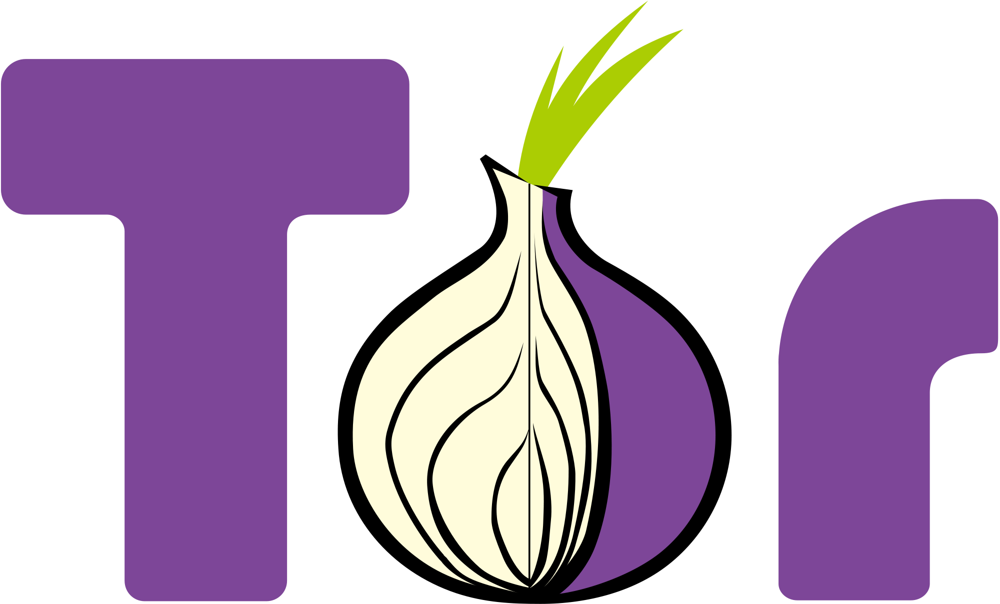

امـنـیـت رایـانـه
برای فعالان مدنی و روزنامهنگاران
{ VPN }
ایرانسک
IranSecurity
IranSec
IranSec2
این محتوا با و تحت گواهی منتشر میشود (بیشتر بخوانید)
استفاده از VPN

افزودن لایهای امنیتی به ارتباط اینترنتی
آخرین به-روز-رسانی: فروردین 1402VPN ابزاری برای اتصال غیرمستقیم به یک سرور است. برای مثال اگر کسی از اصفهان بخواهد به سایت سازمان آمار وصل شود، درخواست خود را به سرویسدهندة اینترنت (و درگاههای بین مسیر) میفرستد. این شرکت درخواست دریافتی را به سرور سازمان آمار میدهد. نتیجه از همین طریق به کاربر برمیگردد. واضح است که تمام درگاههای در مسیر متوجه میشود که این کاربر چه صفحهای را بازکرده و حتا در مواردی (نداشتن گواهی SSL) چه فعالیتی را انجام داده است. در واقع VPN این مسیر را به نیابت از کاربر طی میکند تا درگاهها متوجه این ردوبدل اطلاعات نشوند.
چند نکته
- VPN تنها امنیت را تأمین میکند، نه لزوماً ناشناسی را.
- امنیت کاربر VPN در گرو امنیت شرکت ارائهدهنده آن است.
- از شرکتهایی که به آنها اطمینان ندارید VPN نگیرید.
- هنگام استفاده از اینترنت عمومی از VPN استفاده کنید.
- در برخی از کشورها (مثل ایران) از VPN بهعنوان ابزاری برای دورزدن سانسور اینترنتی استفاده میشود.
- اگر از VPN نامعتبری تنها برای دورزدن فیلتر استفاده میکنید، از آن برای کارهای حساس استفاده نکنید.
- به حوزۀ حقوقی شرکت عرضهکننده VPN توجه کنید. برخی از شرکتها (مثلاً در ایران) باید سیاهۀ فعالیت کاربر را تا مدتی طولانی نگه دارند. اطلاعات را به درخواست مقام قضایی باید در اختیار آنها قرار دهند.
| V2Rey |
OpenConect |
|---|---|
| ناشناسی | ناشناسی |
| تغییر هویت آسان | تغییر هویت آسان |
| دورزدن فیلترینگ | دورزدن فیلترینگ |
|  |
نیاز به کمک دارید؟
پرسشهای خود را با ما در میان بگذارید. support@iransec.org t.me/IranSec_Botحق مؤلف و تشکر
این نوشته بهواسطه تجربۀ چندساله در ارائه مشاورۀ امنیتی به سازمانها، کنشگران مدنی، روزنامهنگاران و شهروندان تهیه شده است. هرچند که تمام تلاشمان را کردهایم که متن حاضر بهروز و بینقص باشد، اما امکان ایراد وجود دارد. پس با آغوش باز پذیرای نقدها و پیشنهادها شما هستیم. لازم است یادآوری کنیم که این جزوهی امنیتی با گواهی کریتو کامنز (قابلاستفادهی غیرتجاری، تخصیص و سهم یکسان) منتشر شده است. به حتم برای هر شکل از استفادهی تجاری از این مجموعه نیاز به کسب اجازه است.
در این پروژۀ آموزشی از محتوای دیگران با گواهی قابلانتشار و تغییر استفاده شده است. از آن جمله میتوان به ارائهگر reveal.js، قلمهای لالهزار و وزیر و بی-یکان، شکلکهای ion و awesome و flat icons استفاده شده. در هر جای پروژه که عکسی استفاده شده منبع آن ذکر شده است. اگر منبعی از قلم افتاده است خوشحال میشویم که آن را گوشزد کنید.